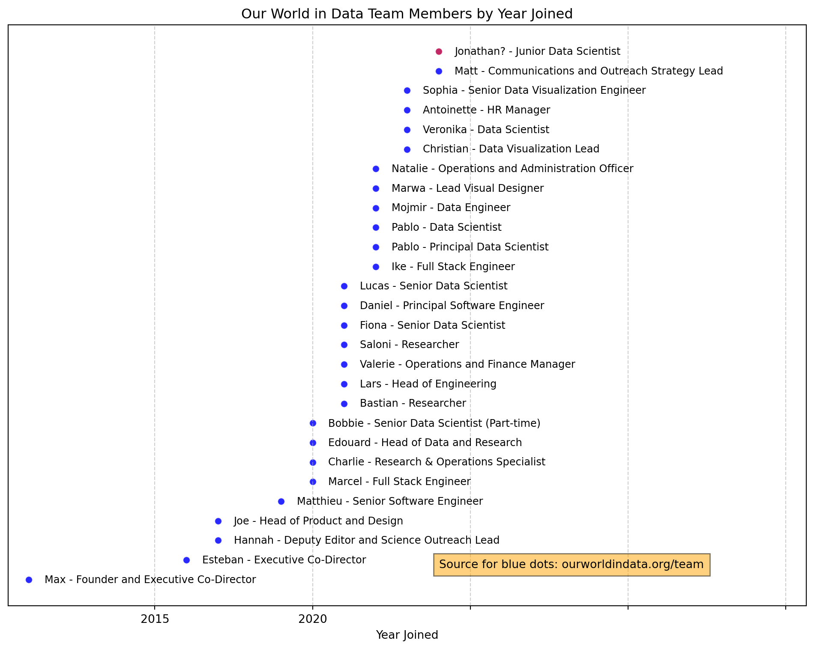

import pandas as pd
import matplotlib.pyplot as plt
from matplotlib.ticker import FuncFormatter
# Create a function to format the x-axis labels
def format_func(value, tick_number):
if value <= 2024:
return f'{value:.0f}'
else:
return ''
# Define the team members data
team_members = [
{"Name": "Pablo Arriagada", "Role": "Data Scientist", "Year Joined": 2022},
{"Name": "Daniel Bachler", "Role": "Principal Software Engineer", "Year Joined": 2021},
{"Name": "Matthieu Bergel", "Role": "Senior Software Engineer", "Year Joined": 2019},
{"Name": "Marwa Boukarim", "Role": "Lead Visual Designer", "Year Joined": 2022},
{"Name": "Saloni Dattani", "Role": "Researcher", "Year Joined": 2021},
{"Name": "Antoinette Finnegan", "Role": "HR Manager", "Year Joined": 2023},
{"Name": "Marcel Gerber", "Role": "Full Stack Engineer", "Year Joined": 2020},
{"Name": "Charlie Giattino", "Role": "Research & Operations Specialist", "Year Joined": 2020},
{"Name": "Joe Hasell", "Role": "Head of Product and Design", "Year Joined": 2017},
{"Name": "Bastian Herre", "Role": "Researcher", "Year Joined": 2021},
{"Name": "Bobbie Macdonald", "Role": "Senior Data Scientist (Part-time)", "Year Joined": 2020},
{"Name": "Edouard Mathieu", "Role": "Head of Data and Research", "Year Joined": 2020},
{"Name": "Sophia Mersmann", "Role": "Senior Data Visualization Engineer", "Year Joined": 2023},
{"Name": "Matt Munday", "Role": "Communications and Outreach Strategy Lead", "Year Joined": 2024},
{"Name": "Esteban Ortiz-Ospina", "Role": "Executive Co-Director", "Year Joined": 2016},
{"Name": "Natalie Reynolds-Garcia", "Role": "Operations and Administration Officer", "Year Joined": 2022},
{"Name": "Hannah Ritchie", "Role": "Deputy Editor and Science Outreach Lead", "Year Joined": 2017},
{"Name": "Lucas Rodés-Guirao", "Role": "Senior Data Scientist", "Year Joined": 2021},
{"Name": "Valerie Rogers Muigai", "Role": "Operations and Finance Manager", "Year Joined": 2021},
{"Name": "Pablo Rosado", "Role": "Principal Data Scientist", "Year Joined": 2022},
{"Name": "Max Roser", "Role": "Founder and Executive Co-Director", "Year Joined": 2011},
{"Name": "Veronika Samborska", "Role": "Data Scientist", "Year Joined": 2023},
{"Name": "Ike Saunders", "Role": "Full Stack Engineer", "Year Joined": 2022},
{"Name": "Fiona Spooner", "Role": "Senior Data Scientist", "Year Joined": 2021},
{"Name": "Christian Swinehart", "Role": "Data Visualization Lead", "Year Joined": 2023},
{"Name": "Mojmir Vinkler", "Role": "Data Engineer", "Year Joined": 2022},
{"Name": "Lars Yencken", "Role": "Head of Engineering", "Year Joined": 2021},
{"Name": "Jonathan?", "Role": "Junior Data Scientist", "Year Joined": 2024}
]
# Create a pandas DataFrame
team_df = pd.DataFrame(team_members)
# Extract first names without prefixes and the position
team_df['First Name'] = team_df['Name'].apply(lambda x: x.split()[0])
team_df['Position'] = team_df['Role']
# Prepare data for plotting
team_df_sorted = team_df[['Year Joined', 'First Name', 'Position']].sort_values(by='Year Joined')
y_positions = range(len(team_df_sorted))
# Create the plot
plt.figure(figsize=(10, 8))
plt.scatter(team_df_sorted['Year Joined'], y_positions, alpha=0.6, color='blue', edgecolors='w', linewidth=0.5)
# Annotate each point with the team member's first name and position
for i, (year, name, position) in enumerate(zip(team_df_sorted['Year Joined'], team_df_sorted['First Name'], team_df_sorted['Position'])):
# Change the color for Jonathan
if name == 'Jonathan?':
color = 'red'
else:
color = 'blue'
plt.scatter(year, i, alpha=0.6, color=color, edgecolors='w', linewidth=0.5)
plt.text(year + 0.5, i, f"{name} - {position}", verticalalignment='center', fontsize=9) # Add 0.5 to year
# Improve layout
plt.yticks([]) # Hide y-axis ticks
plt.xlabel('Year Joined')
plt.title('Our World in Data Team Members by Year Joined')
plt.grid(axis='x', linestyle='--', alpha=0.6)
# Get current x-axis limits
x_min, x_max = plt.xlim()
# Set new x-axis limits
plt.xlim(x_min, x_max + 11) # Extend x-axis by 5 units to the right
# Set the formatter for the x-axis
plt.gca().xaxis.set_major_formatter(FuncFormatter(format_func))
# Add a caption
plt.figtext(0.7, 0.13, "Source for blue dots: ourworldindata.org/team", ha="center", fontsize=10, bbox={"facecolor":"orange", "alpha":0.5, "pad":5})
plt.savefig('team_members.png')
# Show plot
plt.tight_layout()
plt.show()